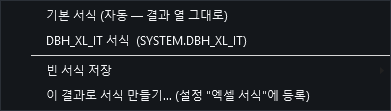
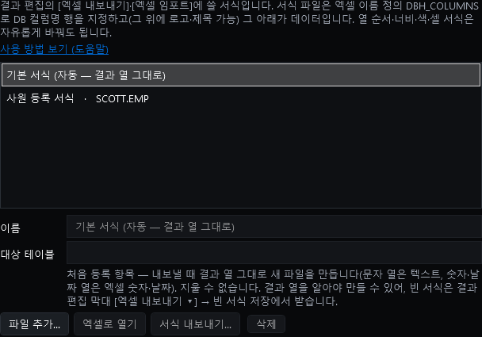
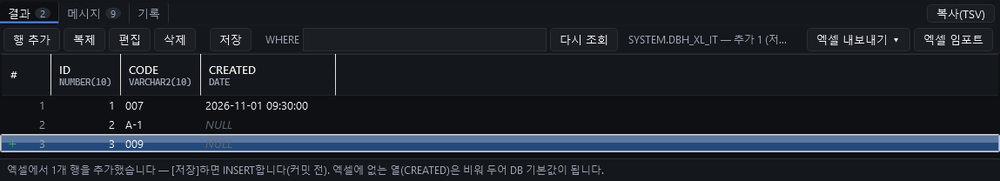
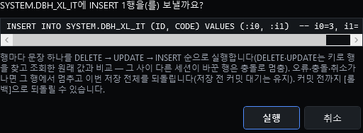

테이블 데이터를 엑셀로 주고받을 때 쓸 서식(엑셀 파일 하나 — 어떤 열을 어떤 순서·셀 서식으로 둘지)을 등록해 두고, 그 서식대로 조회 결과를 내보내거나, 서식대로 채운 파일을 가져와 새 행으로 넣습니다. 서식은 설정 창 > 엑셀 서식 탭에서 관리하고, 빠른 조회(트리에서 테이블을 고르고 F1) 결과 위의 편집 막대에서 씁니다.
DBH_COLUMNS엑셀 이름 정의 DBH_COLUMNS가 가리키는 행이 DB 컬럼명 행이고, 그 아래가 데이터입니다. 나머지는 모두 자유입니다.
| A | B | C | D | ||
|---|---|---|---|---|---|
| 1 | [로고] | 사원 명부 | 로고·제목·설명 — 읽지 않음 | ||
| 2 | 작성: 인사팀 | ||||
| 3 | CODE | ID | CREATED | 비고 | ◀ A3:C3 = DBH_COLUMNS (컬럼명 행) |
| 4 | 007 | 1 | 2026-11-01 09:30 | 확인 필요 | 데이터 (D열은 범위 밖 — 메모로 자유) |
| 5 | A-1 | 2 | 빈 칸 = NULL (새 행이면 DB 기본값) | ||
플러그인이 만든 파일(서식 만들기·빈 서식·기본 서식 내보내기)에는 이미 들어 있습니다. 직접 만든 엑셀은 이렇게 붙입니다.
A3:C3).DBH_COLUMNS를 입력하고 Enter.나중에 컬럼을 더하거나 뺐다면 수식 > 이름 관리자에서 DBH_COLUMNS가 컬럼명 셀 전체를 덮는지 확인하세요. 위에 행을 넣거나 열을 옮기는 것은 엑셀이 범위를 따라 바꿔 줍니다.
빠른 조회 결과에서 [엑셀 내보내기 ▾] → 이 결과로 서식 만들기…를 누르면, 그 결과의 열로 서식을 만들어 설정에 바로 등록합니다(대상 테이블 = 그 테이블).
만든 서식에는 DBH_COLUMNS, 자료형에 맞는 열 서식(문자는 텍스트 @ — 007의 0이 사라지지 않음, 숫자, 날짜 yyyy-mm-dd hh:mm:ss), 규칙을 적은 _규칙 시트가 들어 있습니다.

[엑셀 내보내기 ▾] — 기본 서식 · 이 테이블에 맞는 등록 서식 · 빈 서식 저장 · 이 결과로 서식 만들기.
가지고 있는 엑셀을 서식으로 쓰려면 DBH_COLUMNS를 붙인 뒤 설정 탭의 [파일 추가…]로 등록합니다.

설정 창 "엑셀 서식" 탭 — 맨 위 "기본 서식"은 처음부터 있는 항목입니다.
| 항목·버튼 | 하는 일 |
|---|---|
| 기본 서식 (자동) | 처음부터 있는 항목(지우거나 고칠 수 없음). 결과 열 그대로 새 파일을 만듭니다 — 문자 열은 텍스트, 숫자·날짜 열은 엑셀 숫자·날짜. |
| 이름 · 대상 테이블 | 대상은 OWNER.TABLE 또는 TABLE(대소문자 무시). 그 테이블 결과의 메뉴에만 보입니다. 비우면 모든 결과에 보입니다. |
| [엑셀로 열기] | 서식 파일을 엑셀로 엽니다. 열 순서를 바꾸고, 안 쓸 열을 지우고, 로고·제목·색·날짜 표시 형식을 넣은 뒤 저장하면 다음 내보내기부터 그 모양입니다. |
| [파일 추가…] | 가지고 있는 .xlsx(DBH_COLUMNS 필요)를 등록합니다. 파일은 플러그인 데이터 폴더 excel-formats\로 복사되어 원본을 옮기거나 지워도 남습니다. |
| [서식 내보내기…] | 서식 파일을 원하는 곳에 복사합니다 — 다른 사람에게 건네거나 보관할 때. |
| [삭제] | 목록에서 뺍니다. 관리 폴더의 파일은 설정 창 [저장] 때 지웁니다. |
이름·대상 테이블·삭제는 설정 창 [저장]을 눌러야 남습니다. [파일 추가…]는 누르는 즉시 관리 폴더로 복사합니다. 서식 파일 내용은 엑셀에서 저장하는 즉시 반영됩니다.
[엑셀 내보내기 ▾]에서 서식을 고르고 저장할 파일을 정합니다.
데이터를 채울 사람에게는 값 없는 서식을 줍니다. [엑셀 내보내기 ▾] → 빈 서식 저장에서 서식을 고르세요. 등록 서식은 그 모양 그대로 데이터 칸만 비운 파일, 기본 서식은 그 결과 열로 만든 서식 파일이 저장됩니다(설정 탭 [서식 내보내기…]로 등록 서식 파일을 그대로 복사해도 됩니다).
빈 서식 저장 — 그 결과에 쓸 수 있는 서식 목록.

1행을 가져온 뒤 — 새 행(3번)과 "엑셀에 없는 열(CREATED)은 DB 기본값" 안내.

[저장] 확인 창 — 실행할 INSERT.
엑셀 칸은 PC 지역 설정과 무관하게 이렇게 읽습니다.
| 엑셀 칸 | 읽는 값 |
|---|---|
| 글자 | 그대로(앞의 0·공백 포함) |
| 숫자 | 1234.5 — '.' 소수점, 지수 표기 없이 |
| 날짜·시각 | 2026-11-01 09:30:00 (글자로 써도 이 형식이면 됨) |
| 참/거짓 | 1 / 0 |
| 빈 칸 | NULL — 새 행이면 INSERT에서 빠져 DB 기본값 |
| 안내 | 고칠 것 |
|---|---|
| 엑셀에 이름 정의 DBH_COLUMNS가 없습니다 | 컬럼명 셀들을 고르고 이름 상자에 DBH_COLUMNS를 입력하세요(위 "이름 붙이는 법"). |
| 이름 정의 DBH_COLUMNS(…)의 첫 행에 이 결과의 컬럼명이 없습니다 | 이름이 컬럼명 행이 아닌 곳을 가리키거나 다른 테이블의 서식입니다. 수식 > 이름 관리자에서 범위를 고치세요. |
| 컬럼명 행에 이 결과에 없는 컬럼이 있습니다 | 범위 안 컬럼명의 오타이거나 다른 테이블 컬럼입니다. 고치거나, 메모 열이면 범위 밖으로 빼세요. |
| 컬럼명이 중복되었습니다 | 같은 컬럼명이 두 번 있습니다. 하나를 지우세요. |
| 수식 셀은 임포트할 수 없습니다 | 수식 대신 값으로 붙여 넣으세요(엑셀 [값 붙여넣기]). |
| 오류 값이 든 셀은 가져올 수 없습니다 | #N/A·#VALUE! 같은 칸을 고치세요. |
| [저장] 때 "날짜 형식이 아닙니다" 등 | 칸의 값이 열 형식(숫자·날짜)과 맞지 않습니다. 셀을 날짜·숫자로 넣거나 위 표의 형식으로 쓰세요. |
| 메뉴에 내 서식이 안 보입니다 | 서식의 대상 테이블이 지금 결과의 테이블과 다릅니다. 설정 탭에서 대상 테이블을 고치거나 비우세요. |